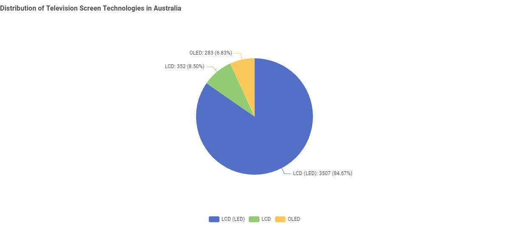
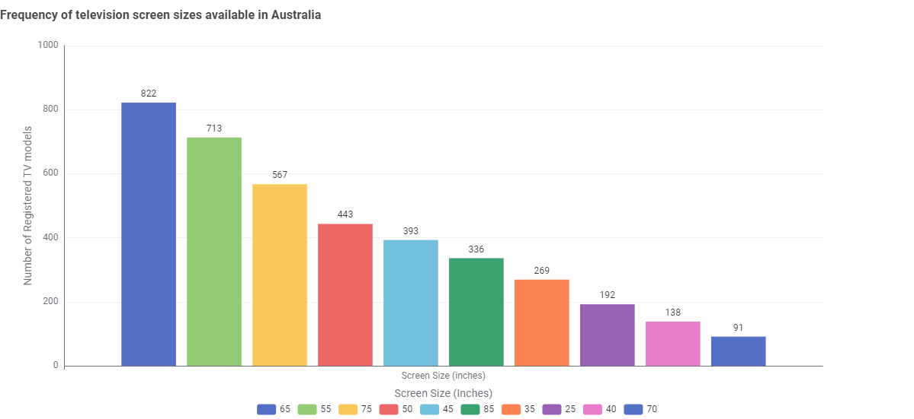
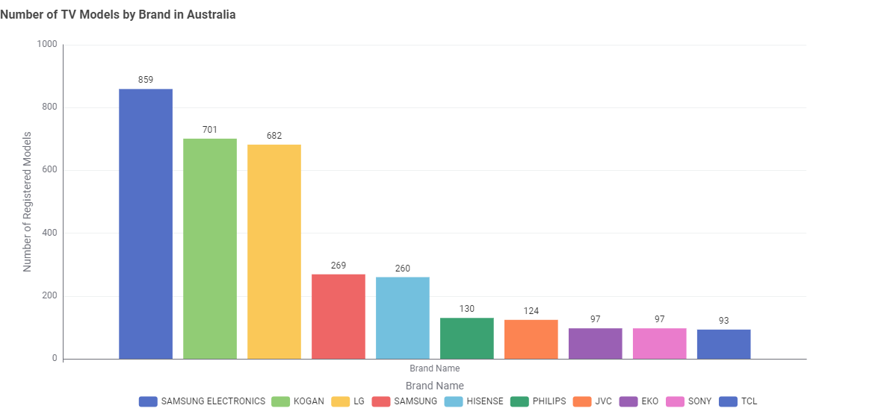
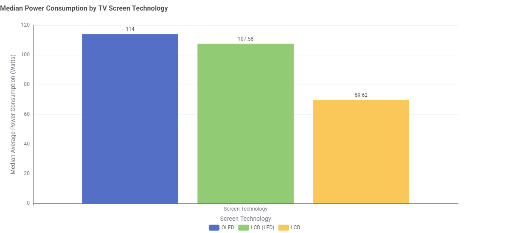
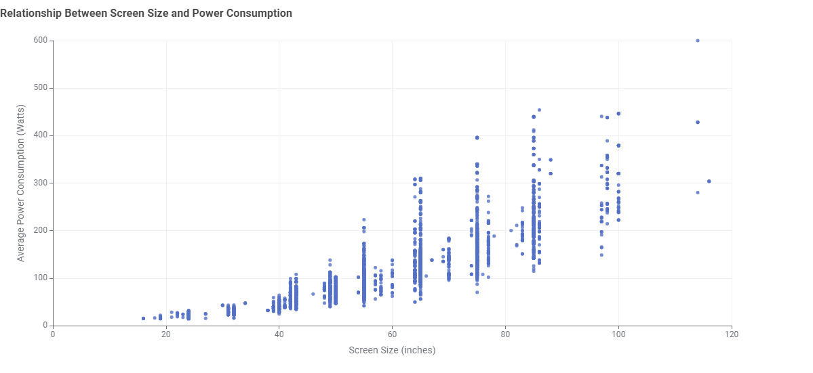
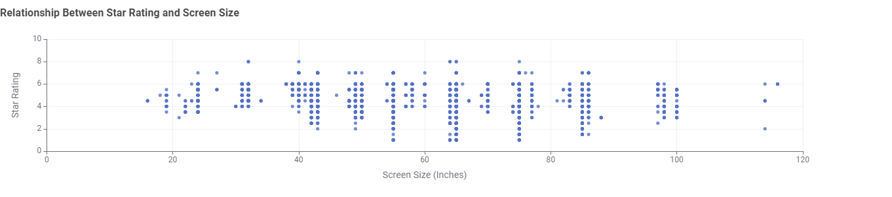

Television Energy Tips
Nothing ATM
TV Energy Insights: Data Story
This section presents findings from the Australian Government’s Television Energy Rating dataset. The aim is to help Australian consumers make informed decisions about technology, size, brand, and efficiency.
Chart 1: What type of TV screen technologies are currently available in Australia and which are the most frequent?
LCD, LED, and LCD (LED) are currently available in Australia where the most common screen technology is LCD (LED)
Chart 2: What screen sizes are currently available, and which are the most frequent?
TV screen sizes range from 20 to 120 inches, with 65-inch models being the most popular, followed closely by 55-inch TVs.
Chart 3: Which brands have the greatest number of different models?
Samsung offers the widest range of TVs, followed by Kogan and LG. Other brands have smaller selections.
Chart 4: Which type of screen technology consumes the least amount of power?
LCD TVs use the least power on average. OLED screens use more energy, but they offer better picture quality.
Chart 5: What is the relationship between screen size and power use?
Larger screen TVs use more power
Chart 6: What is the relationship between star rating and screen size?
Star ratings stay between 4–6 stars for most TVs, no matter the size.
Conclusion
Larger TVs use more power, so choose the smallest screen that suits your space. LCD (LED) TV models between 55–65 inches with a 7-star rating or higher offer the best mix of picture quality and energy efficiency. A well-sized, energy-rated TV can help you enjoy great viewing while keeping electricity costs low.